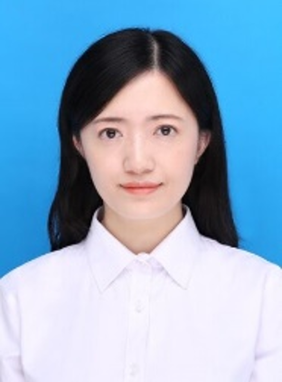
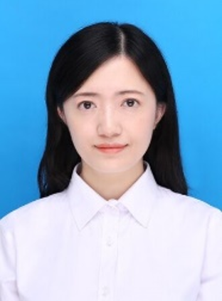

姓名: 梁晓
职称: 副教授
院系: 计算机与软件学院
联系方式: xiaoliang.edu@foxmail.com
姓名: 梁晓
职称: 副教授
院系: 计算机与软件学院
联系方式: xiaoliang.edu@foxmail.com
中国计算机学会会员。主持国家部级项目、四川省教育厅项目等5项，主研油气藏地质及开发工程国家重点实验室开放研究项目等3项；授权国家发明专利1项，获软件著作权登记10余项；学术成果发表在MTA、《软件学报》等SCI/EI期刊以及ICME、ACCV等CCF B、C类国际会议。获西南石油大学“课堂教学质量单项奖—教学创新奖”，校级教学成果二等奖，课堂教学质量优秀奖”三等奖，本科毕业设计优秀指导教师称号；指导学生获中国虚拟现实大赛全国一等奖，全国大学生信息安全竞赛全国二等奖，中国高校计算机大赛—网络技术挑战赛全国三等奖，中国大学生计算机设计大赛省级二等奖，国家级大学生创新创业训练项目等。
已毕业研究生就业去向：旷视科技、西门子研发中心、中科曙光、中科创达、电科网安、成都数字天空、成都尼毕鲁等。
图形图像处理，虚拟现实，网络与系统安全
学术论文：
[1] Xiao Liang, Siyuan Duan. Unsupervised Monte Carlo Denoising via Learning Contrastive Disentanglement Representation. IEEE International Conference on Multimedia and Expo. 2024. CCF B
[2] Lijie Zheng, Xiao Liang. More and Larger Auxiliary Feature-Guided Spatial-Temporal Super-Resolution for Rendered Sequences. Asian Conference on Computer Vision. 2024. CCF C
[3] Yuqiang Zeng, Xiao Liang. A Decoupled Two-Phase Unsupervised Realisim Enhancement framwork for Indoor Scene Renderings. Chinese Conference on Pattern Recognition and Computer Vision. 2024. CCF C
[4] 王妮婷, 梁晓. 基于生成对抗模型及光路分解的全局光照绘制. 计算机工程与应用. 2023, 59|(4)
[5] 王静雯, 梁晓. 交互式蒙特卡洛全局光照超分辨率重建. 计算机工程与设计, 2023, 44(4)
[6] 梁晓, 王静雯. Interactive Global Illumination Super-resolution Rendering based on GAN. 第23届计算机辅助设计与图形学学术会议, 2020, 7
科研项目：
[1] 主持, 西南石油大学启航计划项目, 地震数据的三维体绘制加速技术研究
[2] 主持, 国家XXX部级重点项目, 自适应文件传输系统研发
[3] 主持, 四川省教育厅科研项目, 基于可见性的光线跟踪并行绘制技术研究
[4] 主研, 国家自然科学基金面上项目, 基于学习的复杂并行绘制系统负载平衡算法研究
[5] 主研, 校企合作项目, 基于运行行为的恶意代码动态分析关键技术研究